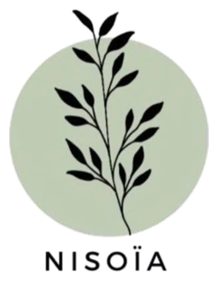
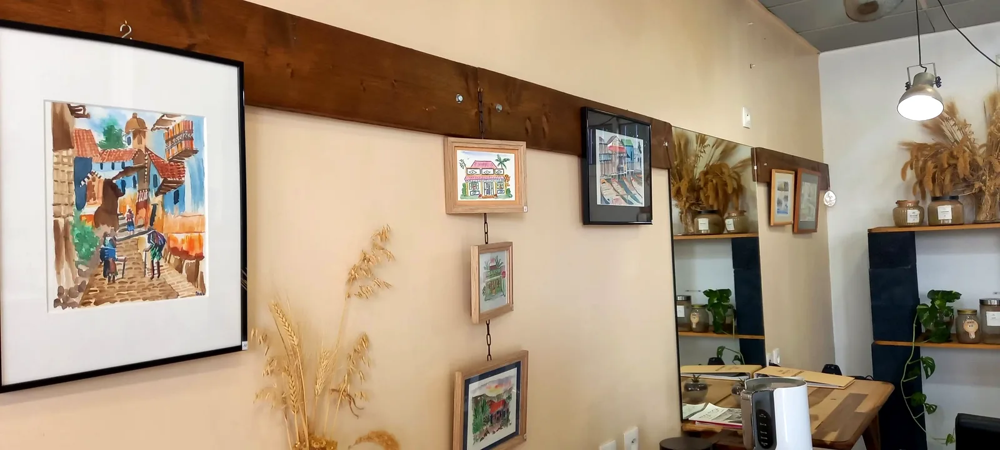
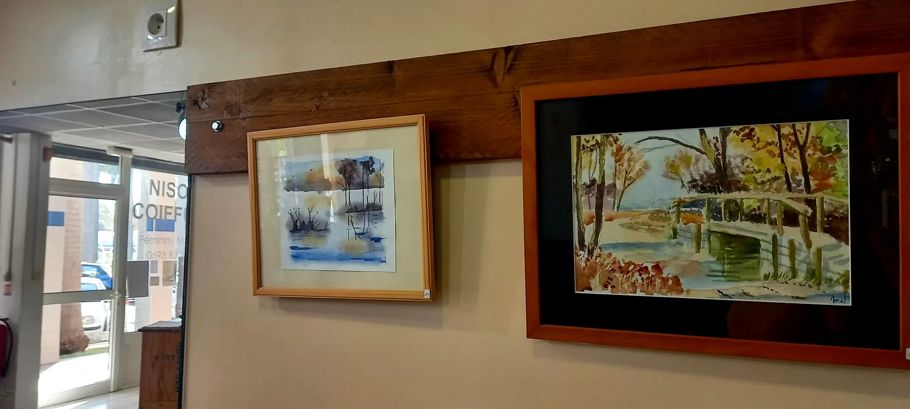
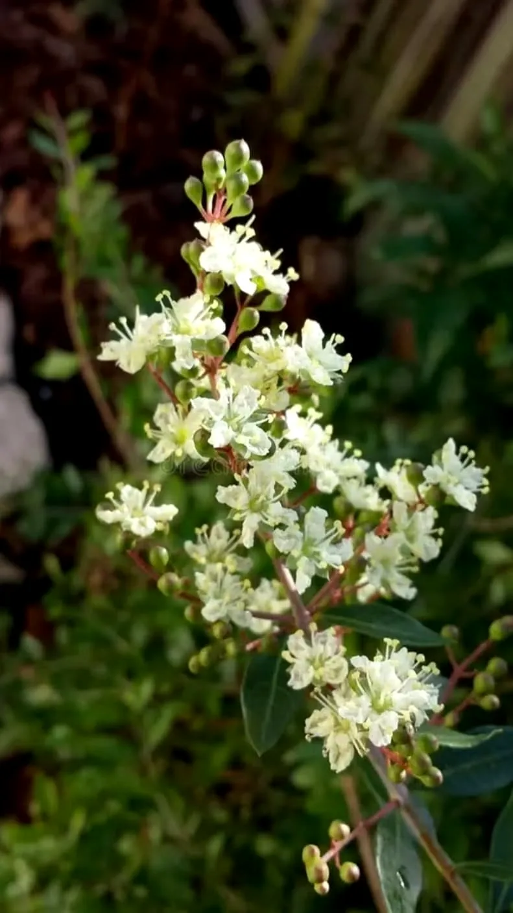
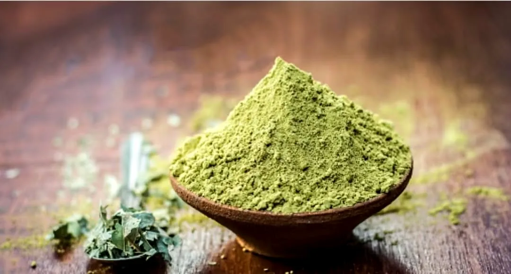
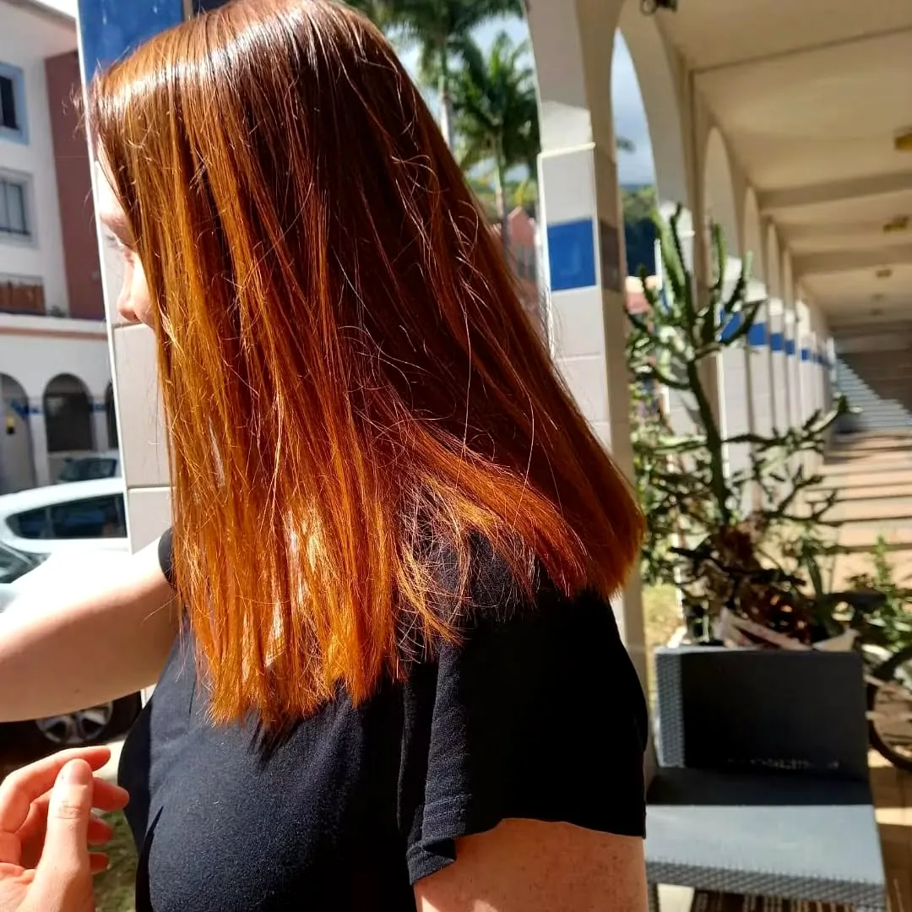
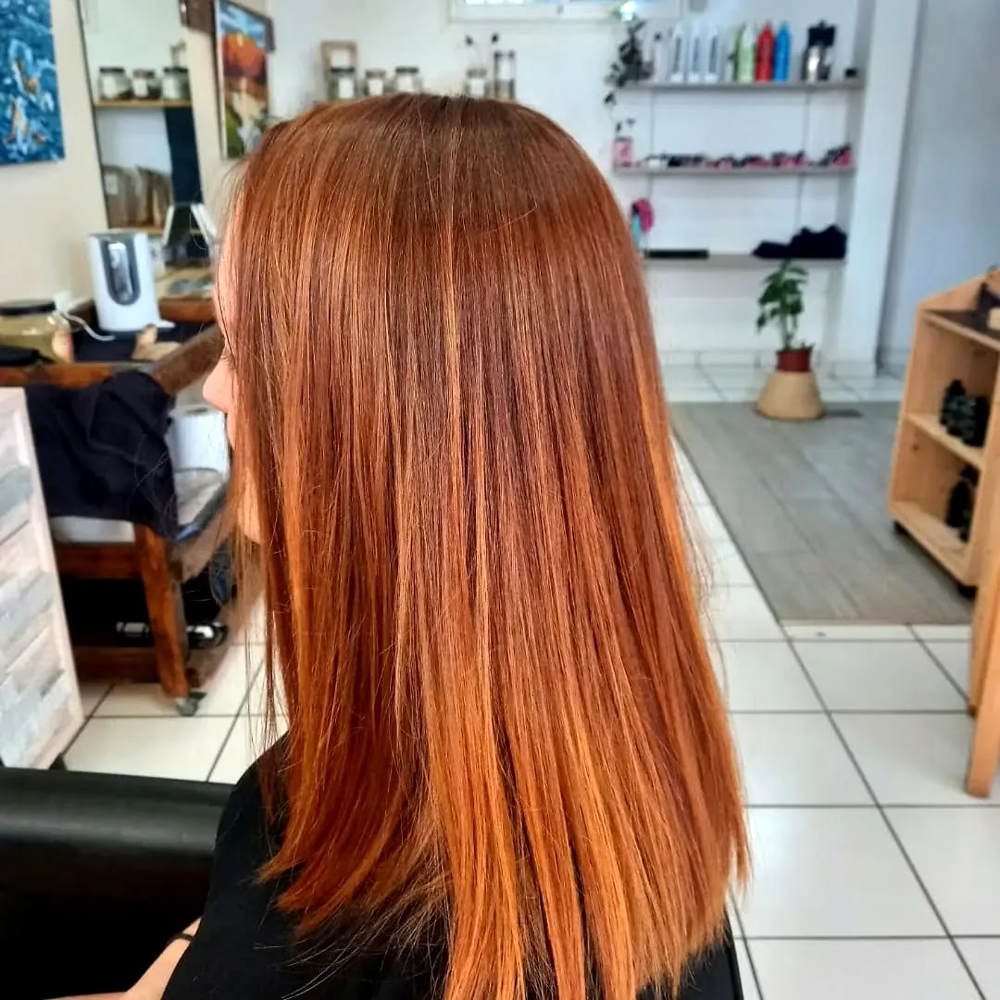
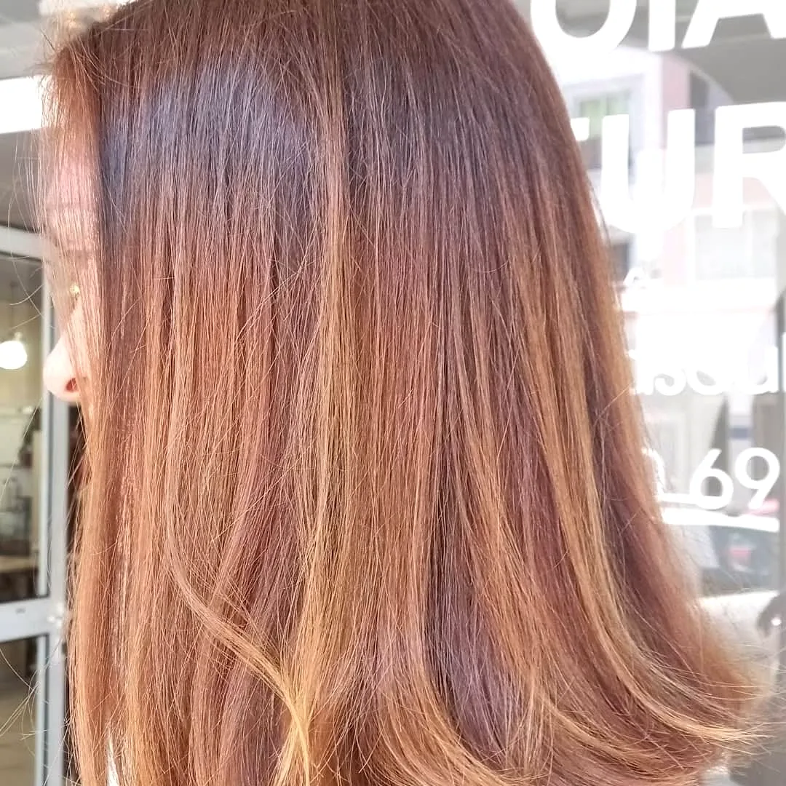
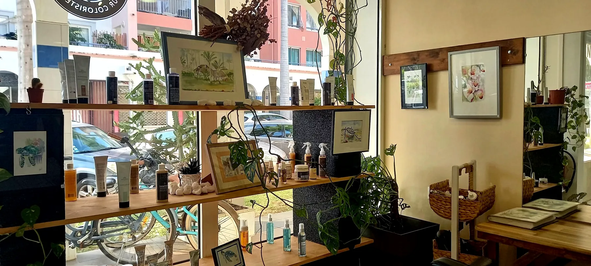

Votre salon de coiffure de la rue du Trésor, spécialiste de la coloration végétale et du respect du cheveu. Conseils et soins sont de rigueur.
Nisoïa coiffure a ouvert ses portes en 2021, rue du Trésor à Saint-Leu. Des étagères de bois, des plantes vertes, des épis séchés et des aquarelles aux murs : on entre dans un petit monde doux, pensé pour prendre soin de soi.
« Spécialiste de la coloration végétale et du respect du cheveu. Venez nous découvrir, conseils et soins seront de rigueur. Prenez RDV ! »Nisoïa coiffure, sur sa page Facebook
Le salon aime aussi accueillir des artistes : l'exposition « Effet miroir » de Julia.Art&Co en mars 2021, puis sa série « Mascarade » en décembre 2021.
Coiffure mixteColoration végétaleConseils & soins



Chez Nisoïa, la couleur vient des plantes tinctoriales, avec la gamme Marcapar. Un parti pris clair : des cheveux beaux, sains et vivants, et une approche de la couleur qui garde toute sa douceur.
« Venez découvrir la coloration 100 % végétale aux plantes tinctoriales #marcapar. Le respect du cheveu avant tout. »Nisoïa coiffure, publication Facebook

Des colorations végétales aux plantes tinctoriales, pour une couleur lumineuse et respectueuse.
Un vrai temps d'écoute pour comprendre votre cheveu, sa nature et ses envies.
« Conseils et soins seront de rigueur » : la promesse du salon, à chaque passage.
« Transformation couleur 100% végétal #marcapar » : quelques résultats partagés par le salon sur sa page.




Faites glisser pour voir la suite →
La formule phare du salon : une coupe et une couleur aux plantes, adaptées à votre nature de cheveux.
Des conseils pour la santé et la vitalité du cheveu, des produits naturels et un moment pour soi.
Femmes et hommes sont les bienvenus au salon, avec une gamme dédiée aux messieurs.
Ambiance feutrée, calme et agréable… Accueil chaleureux, sourire de rigueur (avec option papotage 😉). Travail de professionnelle, coupe impeccable.
D. D. · avis Google
Excellents conseils pour la santé et la vitalité des cheveux ! Je ressors avec de super astuces pour ma transition et une nouvelle coupe.
Vík · avis Google, 2026
Je recherchais un salon capable de s'occuper correctement de mes cheveux légèrement bouclés (…) La patronne et son assistante sont adorables et ont su réaliser une coupe jeune et dynamique qui va très bien à ma nature de cheveux.
Nathalie J. · avis Google
Prestation de qualité. Produits naturels. Ambiance sympathique.
Christophe D. · avis Google
Une parenthèse douce à Saint-Leu, à glisser sous le sapin : pour une maman, une amie, un papa ou soi-même.
Pour prendre soin de ses cheveux, au naturel.
2 rue du Trésor · Saint-LeuPrenez RDV, on vous attend au salon.
Appeler le salon